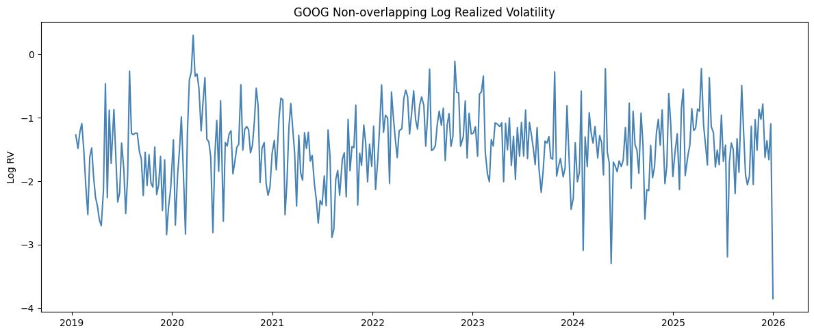
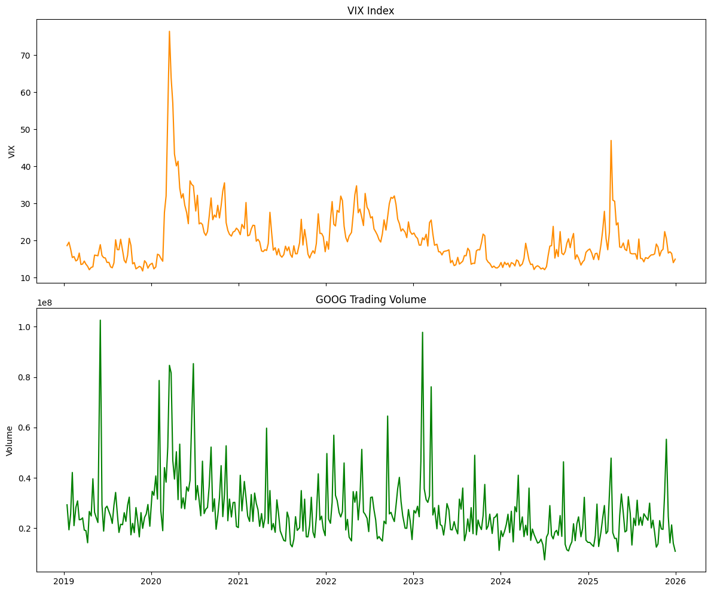
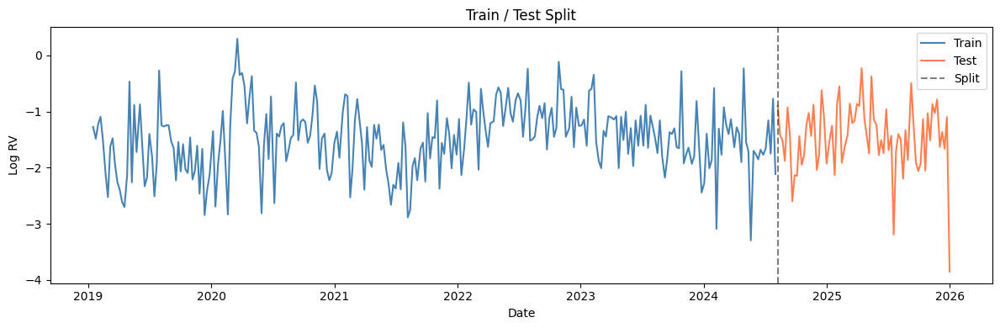
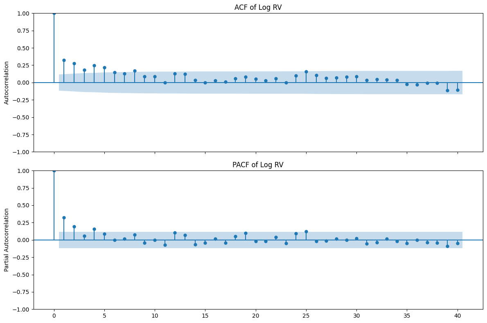
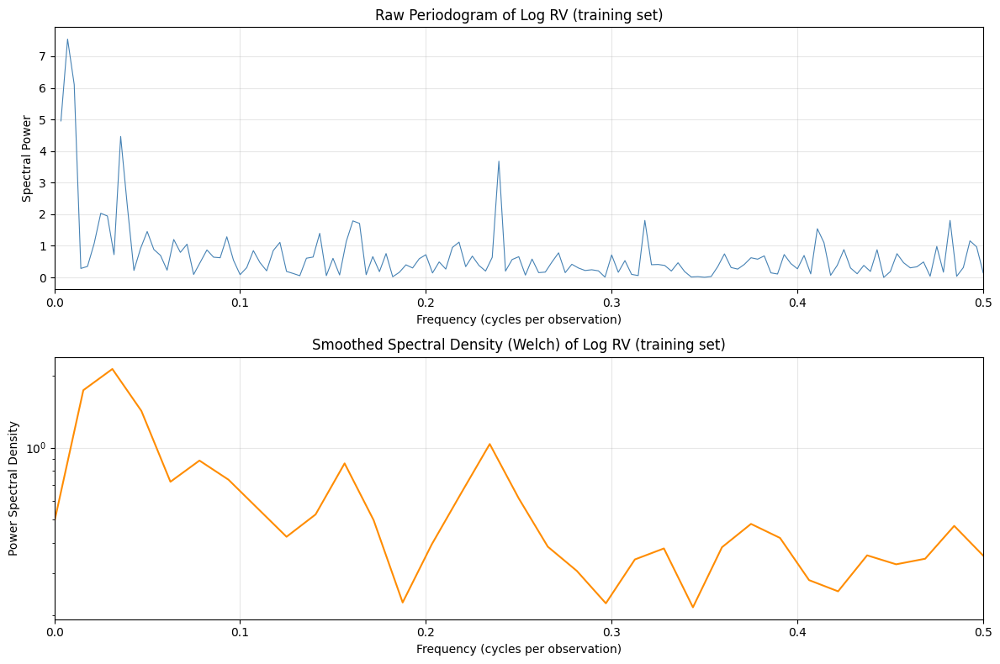
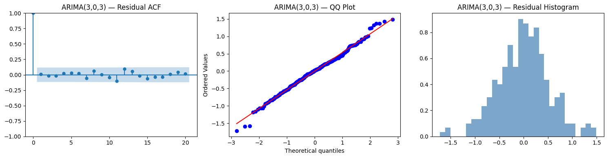
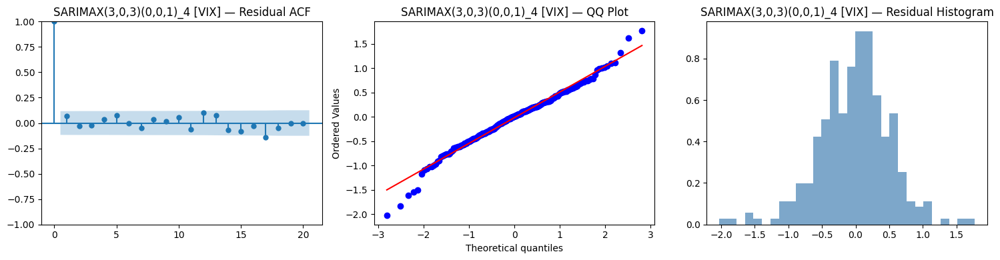
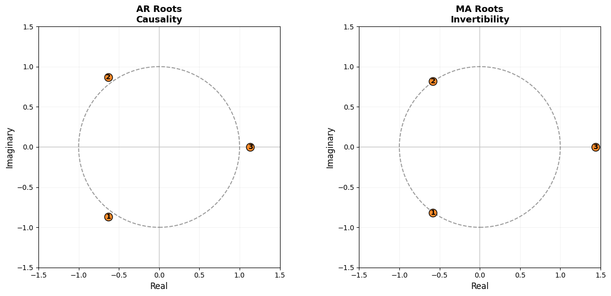
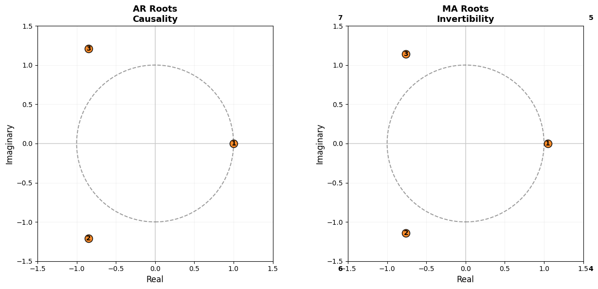

import pandas as pd
import yfinance as yf
import numpy as np
import matplotlib.pyplot as plt
import warnings
from statsmodels.tsa.arima.model import ARIMA
from statsmodels.tsa.statespace.sarimax import SARIMAX
from statsmodels.stats.diagnostic import acorr_ljungbox
from statsmodels.tsa.stattools import adfuller
from statsmodels.graphics.tsaplots import plot_acf, plot_pacf
from scipy import stats as sp_stats
from itertools import product
warnings.filterwarnings('ignore')
RV_window = 5 # Weekly Realized Volatility window# Downloading data, feature engineering, and plotting
goog_df = yf.download('GOOG', start='2019-01-01', end='2026-01-01')
goog_df.index = pd.to_datetime(goog_df.index)
goog_df = goog_df.sort_index(ascending=True)
vix_df = yf.download('^VIX', start='2019-01-01', end='2026-01-01')
vix_df.index = pd.to_datetime(vix_df.index)
vix_df = vix_df.sort_index(ascending=True)
close_df = goog_df[['Close']].copy()
close_df.columns = ['Close']
close_df['Volume'] = goog_df['Volume'].values
close_df = close_df.reset_index().rename(columns={"Date": "date"})
vix_close = vix_df[['Close']].copy()
vix_close.columns = ['VIX']
vix_close = vix_close.reset_index().rename(columns={"Date": "date"})
rv_df = close_df.copy()
rv_df['Log_return'] = np.log(rv_df['Close'] / rv_df['Close'].shift(1))
def get_RV(row, log_returns):
idx = log_returns.index.get_loc(row.name)
if idx < RV_window - 1:
return np.nan
window_returns = log_returns.iloc[idx - RV_window + 1 : idx + 1]
return window_returns.std() * np.sqrt(252)
rv_df['RV'] = rv_df.apply(get_RV, axis=1, log_returns=rv_df['Log_return'])
rv_df = rv_df.dropna(subset=['RV']).reset_index(drop=True)
rv_df['Log_RV'] = np.log(rv_df['RV'])
logrv_no_overlap_df = rv_df.iloc[RV_window::RV_window].reset_index(drop=True)
logrv_no_overlap_df = logrv_no_overlap_df.merge(vix_close, on='date', how='left')
logrv_no_overlap_df['VIX'] = logrv_no_overlap_df['VIX'].ffill()
plt.figure(figsize=(12, 5))
axes = plt.gca()
axes.plot(logrv_no_overlap_df['date'], logrv_no_overlap_df['Log_RV'], color='steelblue')
axes.set_ylabel('Log RV')
axes.set_title('GOOG Non-overlapping Log Realized Volatility')
plt.tight_layout()
plt.savefig('plot/log_realized_volatility_google.png')
plt.show()
fig, axes = plt.subplots(2, 1, figsize=(12, 10), sharex=True)
axes[0].plot(logrv_no_overlap_df['date'], logrv_no_overlap_df['VIX'], color='darkorange')
axes[0].set_ylabel('VIX')
axes[0].set_title('VIX Index')
axes[1].plot(logrv_no_overlap_df['date'], logrv_no_overlap_df['Volume'], color='green')
axes[1].set_ylabel('Volume')
axes[1].set_title('GOOG Trading Volume')
plt.savefig('plot/exogenous_variables.png')
plt.tight_layout()
plt.show()[*********************100%***********************] 1 of 1 completed
[*********************100%***********************] 1 of 1 completed

# Train/test split (80/20) based on time order
train_size = int(len(logrv_no_overlap_df) * 0.8)
train_df = logrv_no_overlap_df.iloc[:train_size].copy().reset_index(drop=True)
test_df = logrv_no_overlap_df.iloc[train_size:].copy().reset_index(drop=True)
print(f"Train set: {len(train_df)} obs ({train_df['date'].iloc[0].date()} to {train_df['date'].iloc[-1].date()})")
print(f"Test set: {len(test_df)} obs ({test_df['date'].iloc[0].date()} to {test_df['date'].iloc[-1].date()})")
plt.figure(figsize=(12, 4))
plt.plot(train_df['date'], train_df['Log_RV'], label='Train', color='steelblue')
plt.plot(test_df['date'], test_df['Log_RV'], label='Test', color='coral')
plt.axvline(x=test_df['date'].iloc[0], color='black', linestyle='--', alpha=0.5, label='Split')
plt.title('Train / Test Split')
plt.savefig('plot/train_test_split.png')
plt.xlabel('Date'); plt.ylabel('Log RV')
plt.legend(); plt.tight_layout(); plt.show()Train set: 280 obs (2019-01-15 to 2024-08-01)
Test set: 71 obs (2024-08-08 to 2025-12-31)
# ACF, PACF plots
fig, axes = plt.subplots(2, 1, figsize=(12, 8), sharex=True)
plot_acf(train_df['Log_RV'], lags=40, ax=axes[0], title='ACF of Log RV')
axes[0].set_ylabel('Autocorrelation')
plot_pacf(train_df['Log_RV'], lags=40, ax=axes[1], title='PACF of Log RV')
axes[1].set_ylabel('Partial Autocorrelation')
plt.tight_layout()
plt.savefig('plot/acf_pacf.png')
plt.show()
# ADF test
result = adfuller(train_df['Log_RV'])
print(f'ADF Statistic: {result[0]}')
print(f'p-value: {result[1]}')
print(f'Critical Values:')
for key, value in result[4].items():
print(f' {key}: {value}')ADF Statistic: -5.315276152295554
p-value: 5.090478139495502e-06
Critical Values:
1%: -3.4542672521624214
5%: -2.87206958769775
10%: -2.5723807881747534from scipy import signal
y_spec = train_df['Log_RV'].values
n = len(y_spec)
# Raw periodogram via FFT
fft_vals = np.fft.rfft(y_spec - np.mean(y_spec))
freqs_raw = np.fft.rfftfreq(n, d=1.0)
periodogram_raw = (2.0 / n) * np.abs(fft_vals) ** 2
# Smoothed spectral density via Welch's method
freqs_welch, psd_welch = signal.welch(y_spec, fs=1.0, nperseg=min(64, n // 4))
fig, axes = plt.subplots(2, 1, figsize=(12, 8))
# Raw periodogram
axes[0].plot(freqs_raw[1:], periodogram_raw[1:], color='steelblue', linewidth=0.8)
axes[0].set_title('Raw Periodogram of Log RV (training set)')
axes[0].set_xlabel('Frequency (cycles per observation)')
axes[0].set_ylabel('Spectral Power')
axes[0].set_xlim(0, 0.5)
axes[0].grid(True, alpha=0.3)
# Smoothed spectral density (Welch)
axes[1].semilogy(freqs_welch, psd_welch, color='darkorange', linewidth=1.5)
axes[1].set_title('Smoothed Spectral Density (Welch) of Log RV (training set)')
axes[1].set_xlabel('Frequency (cycles per observation)')
axes[1].set_ylabel('Power Spectral Density')
axes[1].set_xlim(0, 0.5)
axes[1].grid(True, alpha=0.3)
plt.tight_layout()
plt.savefig('plot/periodogram_and_spectral_density.png')
plt.show()
# We want to find the dominant frequency for frequencies greater than 0.04 (arbitrary), peaks before that can be attributed to low-frequency persistence
mask = freqs_raw > 0.04
peak_idx = np.where(mask)[0][np.argmax(periodogram_raw[mask])]
peak_freq = freqs_raw[peak_idx]
peak_period = 1.0 / peak_freq if peak_freq > 0 else np.inf
print(f"Dominant frequency after 0.04: {peak_freq:.4f} cycles/obs")
print(f"Dominant period: {peak_period:.1f} observations (~{peak_period:.0f} weeks)")
Dominant frequency after 0.04: 0.2393 cycles/obs
Dominant period: 4.2 observations (~4 weeks)y_train = train_df['Log_RV'].values
arima_results = []
for p in range(6):
for q in range(6):
try:
model = ARIMA(y_train, order=(p, 0, q))
res = model.fit()
arima_results.append({'p': p, 'q': q, 'AIC': res.aic})
except Exception:
pass
arima_aic_df = pd.DataFrame(arima_results).sort_values('AIC').reset_index(drop=True)
print("ARIMA(p,0,q) AIC Grid Search — top 10:")
print(arima_aic_df.head(10).to_string(index=False))--------------------------------------------------------------------------- KeyboardInterrupt Traceback (most recent call last) Cell In[54], line 8 6 try: 7 model = ARIMA(y_train, order=(p, 0, q)) ----> 8 res = model.fit() 9 arima_results.append({'p': p, 'q': q, 'AIC': res.aic}) 10 except Exception: File ~/.local/lib/python3.13/site-packages/statsmodels/tsa/arima/model.py:395, in ARIMA.fit(self, start_params, transformed, includes_fixed, method, method_kwargs, gls, gls_kwargs, cov_type, cov_kwds, return_params, low_memory) 392 else: 393 method_kwargs.setdefault('disp', 0) --> 395 res = super().fit( 396 return_params=return_params, low_memory=low_memory, 397 cov_type=cov_type, cov_kwds=cov_kwds, **method_kwargs) 398 if not return_params: 399 res.fit_details = res.mlefit File ~/.local/lib/python3.13/site-packages/statsmodels/tsa/statespace/mlemodel.py:705, in MLEModel.fit(self, start_params, transformed, includes_fixed, cov_type, cov_kwds, method, maxiter, full_output, disp, callback, return_params, optim_score, optim_complex_step, optim_hessian, flags, low_memory, **kwargs) 703 flags['hessian_method'] = optim_hessian 704 fargs = (flags,) --> 705 mlefit = super().fit(start_params, method=method, 706 fargs=fargs, 707 maxiter=maxiter, 708 full_output=full_output, 709 disp=disp, callback=callback, 710 skip_hessian=True, **kwargs) 712 # Just return the fitted parameters if requested 713 if return_params: File ~/.local/lib/python3.13/site-packages/statsmodels/base/model.py:566, in LikelihoodModel.fit(self, start_params, method, maxiter, full_output, disp, fargs, callback, retall, skip_hessian, **kwargs) 563 del kwargs["use_t"] 565 optimizer = Optimizer() --> 566 xopt, retvals, optim_settings = optimizer._fit(f, score, start_params, 567 fargs, kwargs, 568 hessian=hess, 569 method=method, 570 disp=disp, 571 maxiter=maxiter, 572 callback=callback, 573 retall=retall, 574 full_output=full_output) 575 # Restore cov_type, cov_kwds and use_t 576 optim_settings.update(kwds) File ~/.local/lib/python3.13/site-packages/statsmodels/base/optimizer.py:245, in Optimizer._fit(self, objective, gradient, start_params, fargs, kwargs, hessian, method, maxiter, full_output, disp, callback, retall) 242 fit_funcs.update(extra_fit_funcs) 244 func = fit_funcs[method] --> 245 xopt, retvals = func(objective, gradient, start_params, fargs, kwargs, 246 disp=disp, maxiter=maxiter, callback=callback, 247 retall=retall, full_output=full_output, 248 hess=hessian) 250 optim_settings = {'optimizer': method, 'start_params': start_params, 251 'maxiter': maxiter, 'full_output': full_output, 252 'disp': disp, 'fargs': fargs, 'callback': callback, 253 'retall': retall, "extra_fit_funcs": extra_fit_funcs} 254 optim_settings.update(kwargs) File ~/.local/lib/python3.13/site-packages/statsmodels/base/optimizer.py:665, in _fit_lbfgs(f, score, start_params, fargs, kwargs, disp, maxiter, callback, retall, full_output, hess) 663 if SP_LT_116: 664 extended_kwargs["disp"]=disp --> 665 retvals = optimize.fmin_l_bfgs_b( 666 func, 667 start_params, 668 maxiter=maxiter, 669 callback=callback, 670 args=fargs, 671 bounds=bounds, 672 **extended_kwargs 673 ) 676 if full_output: 677 xopt, fopt, d = retvals File ~/.local/lib/python3.13/site-packages/scipy/optimize/_lbfgsb_py.py:281, in fmin_l_bfgs_b(func, x0, fprime, args, approx_grad, bounds, m, factr, pgtol, epsilon, iprint, maxfun, maxiter, disp, callback, maxls) 269 callback = _wrap_callback(callback) 270 opts = {'disp': disp, 271 'iprint': iprint, 272 'maxcor': m, (...) 278 'callback': callback, 279 'maxls': maxls} --> 281 res = _minimize_lbfgsb(fun, x0, args=args, jac=jac, bounds=bounds, 282 **opts) 283 d = {'grad': res['jac'], 284 'task': res['message'], 285 'funcalls': res['nfev'], 286 'nit': res['nit'], 287 'warnflag': res['status']} 288 f = res['fun'] File ~/.local/lib/python3.13/site-packages/scipy/optimize/_lbfgsb_py.py:469, in _minimize_lbfgsb(fun, x0, args, jac, bounds, disp, maxcor, ftol, gtol, eps, maxfun, maxiter, iprint, callback, maxls, finite_diff_rel_step, workers, **unknown_options) 461 _lbfgsb.setulb(m, x, low_bnd, upper_bnd, nbd, f, g, factr, pgtol, wa, 462 iwa, task, lsave, isave, dsave, maxls, ln_task) 464 if task[0] == 3: 465 # The minimization routine wants f and g at the current x. 466 # Note that interruptions due to maxfun are postponed 467 # until the completion of the current minimization iteration. 468 # Overwrite f and g: --> 469 f, g = func_and_grad(x) 470 elif task[0] == 1: 471 # new iteration 472 n_iterations += 1 File ~/.local/lib/python3.13/site-packages/scipy/optimize/_differentiable_functions.py:404, in ScalarFunction.fun_and_grad(self, x) 402 self._update_x(x) 403 self._update_fun() --> 404 self._update_grad() 405 return self.f, self.g File ~/.local/lib/python3.13/site-packages/scipy/optimize/_differentiable_functions.py:366, in ScalarFunction._update_grad(self) 364 if self._orig_grad in FD_METHODS: 365 self._update_fun() --> 366 self.g = self._wrapped_grad(self.x, f0=self.f) 367 self.g_updated = True File ~/.local/lib/python3.13/site-packages/scipy/optimize/_differentiable_functions.py:41, in _ScalarGradWrapper.__call__(self, x, f0, **kwds) 39 g = np.atleast_1d(self.grad(np.copy(x), *self.args)) 40 elif self.grad in FD_METHODS: ---> 41 g, dct = approx_derivative( 42 self.fun, 43 x, 44 f0=f0, 45 **self.finite_diff_options, 46 ) 47 self.nfev += dct['nfev'] 49 self.ngev += 1 File ~/.local/lib/python3.13/site-packages/scipy/optimize/_numdiff.py:593, in approx_derivative(fun, x0, method, rel_step, abs_step, f0, bounds, sparsity, as_linear_operator, args, kwargs, full_output, workers) 591 with MapWrapper(workers) as mf: 592 if sparsity is None: --> 593 J, _nfev = _dense_difference(fun_wrapped, x0, f0, h, 594 use_one_sided, method, 595 mf) 596 else: 597 if not issparse(sparsity) and len(sparsity) == 2: File ~/.local/lib/python3.13/site-packages/scipy/optimize/_numdiff.py:686, in _dense_difference(fun, x0, f0, h, use_one_sided, method, workers) 684 f_evals = workers(fun, x_generator2(x0, h)) 685 dx = [(x0[i] + h[i]) - x0[i] for i in range(n)] --> 686 df = [f_eval - f0 for f_eval in f_evals] 687 df_dx = [delf / delx for delf, delx in zip(df, dx)] 688 nfev += len(df_dx) File ~/.local/lib/python3.13/site-packages/scipy/optimize/_numdiff.py:879, in _Fun_Wrapper.__call__(self, x) 876 if xp.isdtype(x.dtype, "real floating"): 877 x = xp.astype(x, self.x0.dtype) --> 879 f = np.atleast_1d(self.fun(x, *self.args, **self.kwargs)) 880 if f.ndim > 1: 881 raise RuntimeError("`fun` return value has " 882 "more than 1 dimension.") File ~/.local/lib/python3.13/site-packages/scipy/_lib/_util.py:590, in _ScalarFunctionWrapper.__call__(self, x) 587 def __call__(self, x): 588 # Send a copy because the user may overwrite it. 589 # The user of this class might want `x` to remain unchanged. --> 590 fx = self.f(np.copy(x), *self.args) 591 self.nfev += 1 593 # Make sure the function returns a true scalar File ~/.local/lib/python3.13/site-packages/statsmodels/base/model.py:534, in LikelihoodModel.fit.<locals>.f(params, *args) 533 def f(params, *args): --> 534 return -self.loglike(params, *args) / nobs File ~/.local/lib/python3.13/site-packages/statsmodels/tsa/statespace/mlemodel.py:940, in MLEModel.loglike(self, params, *args, **kwargs) 937 if complex_step: 938 kwargs['inversion_method'] = INVERT_UNIVARIATE | SOLVE_LU --> 940 loglike = self.ssm.loglike(complex_step=complex_step, **kwargs) 942 # Koopman, Shephard, and Doornik recommend maximizing the average 943 # likelihood to avoid scale issues, but the averaging is done 944 # automatically in the base model `fit` method 945 return loglike File ~/.local/lib/python3.13/site-packages/statsmodels/tsa/statespace/kalman_filter.py:1001, in KalmanFilter.loglike(self, **kwargs) 985 r""" 986 Calculate the loglikelihood associated with the statespace model. 987 (...) 997 The joint loglikelihood. 998 """ 999 kwargs.setdefault('conserve_memory', 1000 MEMORY_CONSERVE ^ MEMORY_NO_LIKELIHOOD) -> 1001 kfilter = self._filter(**kwargs) 1002 loglikelihood_burn = kwargs.get('loglikelihood_burn', 1003 self.loglikelihood_burn) 1004 if not (kwargs['conserve_memory'] & MEMORY_NO_LIKELIHOOD): File ~/.local/lib/python3.13/site-packages/statsmodels/tsa/statespace/kalman_filter.py:921, in KalmanFilter._filter(self, filter_method, inversion_method, stability_method, conserve_memory, filter_timing, tolerance, loglikelihood_burn, complex_step) 918 kfilter = self._kalman_filters[prefix] 920 # Initialize the state --> 921 self._initialize_state(prefix=prefix, complex_step=complex_step) 923 # Run the filter 924 kfilter() File ~/.local/lib/python3.13/site-packages/statsmodels/tsa/statespace/representation.py:1058, in Representation._initialize_state(self, prefix, complex_step) 1056 if not self.initialization.initialized: 1057 raise RuntimeError('Initialization is incomplete.') -> 1058 self._statespaces[prefix].initialize(self.initialization, 1059 complex_step=complex_step) 1060 else: 1061 raise RuntimeError('Statespace model not initialized.') KeyboardInterrupt:
sarima_results = []
for p, q, P, Q in product(range(4), range(4), range(2), range(2)):
try:
model = SARIMAX(y_train, order=(p, 0, q), seasonal_order=(P, 0, Q, 4),
enforce_stationarity=False, enforce_invertibility=False)
res = model.fit(disp=False, maxiter=200)
sarima_results.append({'p': p, 'q': q, 'P': P, 'Q': Q, 'AIC': res.aic})
except Exception:
pass
sarima_aic_df = pd.DataFrame(sarima_results).sort_values('AIC').reset_index(drop=True)
print("SARIMA(p,0,q)(P,0,Q)_4 AIC Grid Search — top 10:")
print(sarima_aic_df.head(10).to_string(index=False))SARIMA(p,0,q)(P,0,Q)_4 AIC Grid Search — top 10:
p q P Q AIC
1 3 0 1 463.202376
3 3 0 1 463.336900
1 3 1 1 464.159928
3 3 1 0 464.277799
2 3 0 1 465.039958
2 3 1 1 466.166703
3 1 1 0 466.350367
1 2 0 1 467.104214
2 1 1 0 467.275417
2 1 0 1 467.336049exog_configs = {
'VIX': train_df[['VIX']],
'Volume': train_df[['Volume']],
'VIX+Volume': train_df[['VIX', 'Volume']],
}
sarimax_results = []
for exog_name, exog_data in exog_configs.items():
for p, q, P, Q in product(range(4), range(4), range(2), range(2)):
try:
model = SARIMAX(y_train, exog=exog_data.values,
order=(p, 0, q), seasonal_order=(P, 0, Q, 4),
enforce_stationarity=False, enforce_invertibility=False)
res = model.fit(disp=False, maxiter=200)
sarimax_results.append({
'exog': exog_name, 'p': p, 'q': q, 'P': P, 'Q': Q, 'AIC': res.aic
})
except Exception:
pass
sarimax_aic_df = pd.DataFrame(sarimax_results).sort_values('AIC').reset_index(drop=True)
for name in exog_configs:
subset = sarimax_aic_df[sarimax_aic_df['exog'] == name].head(5)
print(f"\nSARIMAX with {name} — top 5:")
print(subset.to_string(index=False))
SARIMAX with VIX — top 5:
exog p q P Q AIC
VIX 3 3 0 1 403.277768
VIX 3 3 1 0 404.231425
VIX 3 3 0 0 407.828791
VIX 1 1 0 1 409.924940
VIX 1 3 0 1 410.806045
SARIMAX with Volume — top 5:
exog p q P Q AIC
Volume 1 3 0 1 721.069129
Volume 1 3 1 1 721.739443
Volume 2 3 0 1 725.869632
Volume 1 2 1 1 726.024428
Volume 1 1 1 1 726.212511
SARIMAX with VIX+Volume — top 5:
exog p q P Q AIC
VIX+Volume 1 3 0 0 620.593665
VIX+Volume 2 3 0 0 621.469406
VIX+Volume 3 2 0 0 623.240732
VIX+Volume 3 3 0 0 623.350608
VIX+Volume 1 1 0 0 623.686188arima_labelled = arima_aic_df.head(5).copy()
arima_labelled['model'] = arima_labelled.apply(
lambda r: f"ARIMA({int(r['p'])},0,{int(r['q'])})", axis=1)
arima_labelled['family'] = 'ARIMA'
sarima_labelled = sarima_aic_df.head(5).copy()
sarima_labelled['model'] = sarima_labelled.apply(
lambda r: f"SARIMA({int(r['p'])},0,{int(r['q'])})({int(r['P'])},0,{int(r['Q'])})_4", axis=1)
sarima_labelled['family'] = 'SARIMA'
non_exog = pd.concat([arima_labelled, sarima_labelled]).sort_values('AIC').reset_index(drop=True)
print("\nTop (S)ARIMA models (no exogenous):")
for i, row in non_exog.head(6).iterrows():
print(f" {row['model']:45s} AIC = {row['AIC']:.2f}")
best_arima_spec = non_exog.iloc[0]
print(f"\n >>> Best (S)ARIMA: {best_arima_spec['model']} (AIC = {best_arima_spec['AIC']:.2f})")
sarimax_labelled = sarimax_aic_df.head(10).copy()
sarimax_labelled['model'] = sarimax_labelled.apply(
lambda r: f"SARIMAX({int(r['p'])},0,{int(r['q'])})({int(r['P'])},0,{int(r['Q'])})_4 [{r['exog']}]", axis=1)
print("\nTop (S)ARIMAX models (with exogenous):")
for i, row in sarimax_labelled.head(6).iterrows():
print(f" {row['model']:55s} AIC = {row['AIC']:.2f}")
best_sarimax_spec = sarimax_aic_df.iloc[0]
best_sx_label = f"SARIMAX({int(best_sarimax_spec['p'])},0,{int(best_sarimax_spec['q'])})({int(best_sarimax_spec['P'])},0,{int(best_sarimax_spec['Q'])})_4 [{best_sarimax_spec['exog']}]"
print(f"\n >>> Best (S)ARIMAX: {best_sx_label} (AIC = {best_sarimax_spec['AIC']:.2f})")
Top (S)ARIMA models (no exogenous):
ARIMA(3,0,3) AIC = 459.31
SARIMA(1,0,3)(0,0,1)_4 AIC = 463.20
SARIMA(3,0,3)(0,0,1)_4 AIC = 463.34
ARIMA(4,0,4) AIC = 463.92
SARIMA(1,0,3)(1,0,1)_4 AIC = 464.16
SARIMA(3,0,3)(1,0,0)_4 AIC = 464.28
>>> Best (S)ARIMA: ARIMA(3,0,3) (AIC = 459.31)
Top (S)ARIMAX models (with exogenous):
SARIMAX(3,0,3)(0,0,1)_4 [VIX] AIC = 403.28
SARIMAX(3,0,3)(1,0,0)_4 [VIX] AIC = 404.23
SARIMAX(3,0,3)(0,0,0)_4 [VIX] AIC = 407.83
SARIMAX(1,0,1)(0,0,1)_4 [VIX] AIC = 409.92
SARIMAX(1,0,3)(0,0,1)_4 [VIX] AIC = 410.81
SARIMAX(1,0,1)(1,0,0)_4 [VIX] AIC = 410.86
>>> Best (S)ARIMAX: SARIMAX(3,0,3)(0,0,1)_4 [VIX] (AIC = 403.28)def run_diagnostics(label, res):
"""Print summary, Ljung-Box, Jarque-Bera, and residual plots."""
print("=" * 75)
print(f"Diagnostics: {label}")
print("=" * 75)
print(res.summary())
resid = res.resid
lb = acorr_ljungbox(resid, lags=[10], return_df=True)
print(f"\nLjung-Box (lag 10): stat = {lb['lb_stat'].values[0]:.3f}, p = {lb['lb_pvalue'].values[0]:.4f}")
jb_stat, jb_p = sp_stats.jarque_bera(resid)[:2]
print(f"Jarque-Bera: stat = {jb_stat:.3f}, p = {jb_p:.4f}")
from statsmodels.stats.diagnostic import het_arch
arch_stat, arch_p, _, _ = het_arch(resid, nlags=5)
print(f"ARCH LM (5 lags): stat = {arch_stat:.3f}, p = {arch_p:.4f}")
fig, axes = plt.subplots(1, 3, figsize=(15, 4))
plot_acf(resid, lags=20, ax=axes[0], title=f'{label} — Residual ACF')
sp_stats.probplot(resid, dist='norm', plot=axes[1])
axes[1].set_title(f'{label} — QQ Plot')
axes[2].hist(resid, bins=30, density=True, alpha=0.7, color='steelblue')
axes[2].set_title(f'{label} — Residual Histogram')
plt.tight_layout()
plt.savefig(f'plot/diagnostics_{label}.png')
plt.show()
return res
ba = best_arima_spec
if ba['family'] == 'ARIMA':
m1 = ARIMA(y_train, order=(int(ba['p']), 0, int(ba['q']))).fit()
else:
m1 = SARIMAX(y_train, order=(int(ba['p']), 0, int(ba['q'])),
seasonal_order=(int(ba['P']), 0, int(ba['Q']), 4),
enforce_stationarity=False, enforce_invertibility=False).fit(disp=False)
res_arima = run_diagnostics("ARIMA", m1)
bs = best_sarimax_spec
exog_cols = {'VIX': ['VIX'], 'Volume': ['Volume'], 'VIX+Volume': ['VIX', 'Volume']}[bs['exog']]
m2 = SARIMAX(y_train, exog=train_df[exog_cols].values,
order=(int(bs['p']), 0, int(bs['q'])),
seasonal_order=(int(bs['P']), 0, int(bs['Q']), 4),
enforce_stationarity=False, enforce_invertibility=False).fit(disp=False)
res_sarimax = run_diagnostics("SARIMAX", m2)===========================================================================
Diagnostics: ARIMA(3,0,3)
===========================================================================
SARIMAX Results
==============================================================================
Dep. Variable: y No. Observations: 280
Model: ARIMA(3, 0, 3) Log Likelihood -221.657
Date: Fri, 20 Feb 2026 AIC 459.313
Time: 02:22:51 BIC 488.391
Sample: 0 HQIC 470.976
- 280
Covariance Type: opg
==============================================================================
coef std err z P>|z| [0.025 0.975]
------------------------------------------------------------------------------
const -1.4764 0.091 -16.307 0.000 -1.654 -1.299
ar.L1 -0.2143 0.065 -3.292 0.001 -0.342 -0.087
ar.L2 0.0994 0.070 1.417 0.156 -0.038 0.237
ar.L3 0.7654 0.057 13.378 0.000 0.653 0.878
ma.L1 0.4621 0.082 5.646 0.000 0.302 0.622
ma.L2 0.1888 0.095 1.979 0.048 0.002 0.376
ma.L3 -0.6901 0.084 -8.255 0.000 -0.854 -0.526
sigma2 0.2814 0.025 11.300 0.000 0.233 0.330
===================================================================================
Ljung-Box (L1) (Q): 0.03 Jarque-Bera (JB): 2.95
Prob(Q): 0.85 Prob(JB): 0.23
Heteroskedasticity (H): 0.74 Skew: -0.06
Prob(H) (two-sided): 0.15 Kurtosis: 3.49
===================================================================================
Warnings:
[1] Covariance matrix calculated using the outer product of gradients (complex-step).
Ljung-Box (lag 10): stat = 3.098, p = 0.9790
Jarque-Bera: stat = 2.934, p = 0.2306
ARCH LM (5 lags): stat = 1.966, p = 0.8538
===========================================================================
Diagnostics: SARIMAX(3,0,3)(0,0,1)_4 [VIX]
===========================================================================
SARIMAX Results
===========================================================================================
Dep. Variable: y No. Observations: 280
Model: SARIMAX(3, 0, 3)x(0, 0, [1], 4) Log Likelihood -198.082
Date: Fri, 20 Feb 2026 AIC 414.165
Time: 02:22:52 BIC 446.617
Sample: 0 HQIC 427.193
- 280
Covariance Type: opg
==============================================================================
coef std err z P>|z| [0.025 0.975]
------------------------------------------------------------------------------
x1 0.0405 0.006 6.986 0.000 0.029 0.052
ar.L1 0.2193 0.568 0.386 0.699 -0.894 1.333
ar.L2 0.3212 0.404 0.794 0.427 -0.471 1.114
ar.L3 0.4582 0.520 0.881 0.378 -0.561 1.478
ma.L1 -0.1492 0.556 -0.268 0.788 -1.239 0.941
ma.L2 -0.2385 0.371 -0.643 0.520 -0.965 0.488
ma.L3 -0.5066 0.472 -1.074 0.283 -1.431 0.418
ma.S.L4 0.0383 0.083 0.463 0.643 -0.124 0.201
sigma2 0.2507 0.019 13.324 0.000 0.214 0.288
===================================================================================
Ljung-Box (L1) (Q): 0.00 Jarque-Bera (JB): 8.67
Prob(Q): 0.96 Prob(JB): 0.01
Heteroskedasticity (H): 0.95 Skew: -0.02
Prob(H) (two-sided): 0.81 Kurtosis: 3.87
===================================================================================
Warnings:
[1] Covariance matrix calculated using the outer product of gradients (complex-step).
Ljung-Box (lag 10): stat = 6.094, p = 0.8073
Jarque-Bera: stat = 26.197, p = 0.0000
ARCH LM (5 lags): stat = 0.958, p = 0.9659
def plot_root_circle(ar_roots, ma_roots, axs=None, label=None, color='C1', markersize=130):
# refactor this functions to plot the unit circle and the roots of both roots together as subplots
# This refactored function creates two subplots: one for AR roots, one for MA roots, both with unit circle.
# If axs is None, create a new figure with two (side-by-side) subplots
if axs is None:
fig, axs = plt.subplots(1, 2, figsize=(13, 6))
elif isinstance(axs, plt.Axes): # Single axis, wrap in list
axs = [axs]
# else: assume user passes an iterable
def plot_roots(ax, roots, title, color):
# Draw the unit circle
circle = plt.Circle((0, 0), 1, edgecolor='k', facecolor='none',
linestyle='--', linewidth=1.4, alpha=0.4)
ax.add_patch(circle)
# Draw coordinate axes
ax.axhline(0, color='lightgrey', lw=1.2, zorder=0)
ax.axvline(0, color='lightgrey', lw=1.2, zorder=0)
# Plot roots and label with indices if any
if len(roots) > 0:
ax.scatter(np.real(roots), np.imag(roots), c=color, s=markersize,
edgecolors='black', lw=1.2, alpha=0.88, zorder=5)
for j, root in enumerate(roots):
ax.text(np.real(root), np.imag(root), f"{j+1}", color='black',
fontsize=10, fontweight='bold', ha='center', va='center', zorder=6)
else:
ax.text(0, 0, 'No roots', fontsize=12, ha='center', va='center', color=color, alpha=0.6)
ax.set_xlabel('Real', fontsize=12)
ax.set_ylabel('Imaginary', fontsize=12)
ax.set_xlim(-1.5, 1.5)
ax.set_ylim(-1.5, 1.5)
ax.set_aspect('equal', adjustable='box')
ax.set_title(title, fontsize=13, fontweight='bold')
ax.grid(True, which='major', alpha=0.14)
ticks = np.arange(-1.5, 1.6, 0.5)
ax.set_xticks(ticks)
ax.set_yticks(ticks)
plot_roots(axs[0], ar_roots, f"AR Roots for {label}\nCausality", color)
plot_roots(axs[1], ma_roots, f"MA Roots for {label}\nInvertibility", color)
plt.tight_layout()
if axs is None or not plt.fignum_exists(axs[0].figure.number):
plt.savefig(f'plot/root_circle_{label}.png')
plt.show()
def check_roots(res, label):
"""Check causality (AR roots) and invertibility (MA roots) of a fitted model."""
print("=" * 65)
print(f"{label}")
print("=" * 65)
ar_roots = res.arroots
ma_roots = res.maroots
print("\n-- Causality (AR roots outside unit circle?) --")
if len(ar_roots) == 0:
print(" No AR terms.")
else:
for j, r in enumerate(ar_roots):
mod = np.abs(r)
status = "CAUSAL" if mod > 1 else "NOT CAUSAL"
print(f" AR root {j+1}: {r:.4f} |mod| = {mod:.4f} -> {status}")
print("\n-- Invertibility (MA roots outside unit circle?) --")
if len(ma_roots) == 0:
print(" No MA terms.")
else:
for j, r in enumerate(ma_roots):
mod = np.abs(r)
status = "INVERTIBLE" if mod > 1 else "NOT INVERTIBLE"
print(f" MA root {j+1}: {r:.4f} |mod| = {mod:.4f} -> {status}")
all_causal = len(ar_roots) == 0 or np.all(np.abs(ar_roots) > 1)
all_invertible = len(ma_roots) == 0 or np.all(np.abs(ma_roots) > 1)
print(f"\n Overall: {'Causal' if all_causal else 'NOT Causal'} and {'Invertible' if all_invertible else 'NOT Invertible'}")
print("\n-- Unit Root Test on Residuals (ADF) --")
adf_stat, adf_p, _, _, crit, _ = adfuller(res.resid)
print(f" ADF statistic: {adf_stat:.4f}")
print(f" p-value: {adf_p:.6f}")
for k, v in crit.items():
print(f" Critical ({k}): {v:.4f}")
print(f" Residuals are {'stationary' if adf_p < 0.05 else 'non-stationary'} at 5% level.")
print()
plot_root_circle(ar_roots, ma_roots, label=label)
check_roots(res_arima, "Model 1: ARIMA")
check_roots(res_sarimax, "Model 2: SARIMAX")
=================================================================
Model 1: ARIMA(3,0,3)
=================================================================
-- Causality (AR roots outside unit circle?) --
AR root 1: -0.6317-0.8679j |mod| = 1.0735 -> CAUSAL
AR root 2: -0.6317+0.8679j |mod| = 1.0735 -> CAUSAL
AR root 3: 1.1337-0.0000j |mod| = 1.1337 -> CAUSAL
-- Invertibility (MA roots outside unit circle?) --
MA root 1: -0.5826-0.8171j |mod| = 1.0035 -> INVERTIBLE
MA root 2: -0.5826+0.8171j |mod| = 1.0035 -> INVERTIBLE
MA root 3: 1.4388-0.0000j |mod| = 1.4388 -> INVERTIBLE
Overall: Causal and Invertible
-- Unit Root Test on Residuals (ADF) --
ADF statistic: -16.4127
p-value: 0.000000
Critical (1%): -3.4540
Critical (5%): -2.8720
Critical (10%): -2.5723
Residuals are stationary at 5% level.
=================================================================
Model 2: SARIMAX(3,0,3)(0,0,1)_4 [VIX]
=================================================================
-- Causality (AR roots outside unit circle?) --
AR root 1: 1.0006-0.0000j |mod| = 1.0006 -> CAUSAL
AR root 2: -0.8508-1.2072j |mod| = 1.4769 -> CAUSAL
AR root 3: -0.8508+1.2072j |mod| = 1.4769 -> CAUSAL
-- Invertibility (MA roots outside unit circle?) --
MA root 1: 1.0474-0.0000j |mod| = 1.0474 -> INVERTIBLE
MA root 2: -0.7590-1.1439j |mod| = 1.3728 -> INVERTIBLE
MA root 3: -0.7590+1.1439j |mod| = 1.3728 -> INVERTIBLE
MA root 4: 1.5981-1.5981j |mod| = 2.2601 -> INVERTIBLE
MA root 5: 1.5981+1.5981j |mod| = 2.2601 -> INVERTIBLE
MA root 6: -1.5981-1.5981j |mod| = 2.2601 -> INVERTIBLE
MA root 7: -1.5981+1.5981j |mod| = 2.2601 -> INVERTIBLE
Overall: Causal and Invertible
-- Unit Root Test on Residuals (ADF) --
ADF statistic: -15.8884
p-value: 0.000000
Critical (1%): -3.4540
Critical (5%): -2.8720
Critical (10%): -2.5723
Residuals are stationary at 5% level.


def rolling_forecast(train_vals, test_vals, order, seasonal_order=None,
train_exog=None, test_exog=None):
"""One-step-ahead rolling forecast on the test set."""
history = list(train_vals)
exog_hist = list(train_exog) if train_exog is not None else None
predictions = []
for t in range(len(test_vals)):
y_hist = np.array(history)
ex_hist = np.array(exog_hist) if exog_hist is not None else None
model = SARIMAX(y_hist, exog=ex_hist,
order=order,
seasonal_order=seasonal_order if seasonal_order else (0,0,0,0),
enforce_stationarity=False, enforce_invertibility=False)
res = model.fit(disp=False)
if test_exog is not None:
fc = res.forecast(steps=1, exog=np.array(test_exog[t]).reshape(1, -1))
else:
fc = res.forecast(steps=1)
yhat = fc.iloc[0] if hasattr(fc, 'iloc') else fc[0]
predictions.append(yhat)
history.append(test_vals[t])
if exog_hist is not None:
exog_hist.append(test_exog[t])
return np.array(predictions)
def eval_metrics(actual, predicted):
rmse = np.sqrt(np.mean((actual - predicted) ** 2))
mae = np.mean(np.abs(actual - predicted))
mape = np.mean(np.abs((actual - predicted) / actual)) * 100
return rmse, mae, mape
ba = best_arima_spec
if ba['family'] == 'ARIMA':
order1 = (int(ba['p']), 0, int(ba['q']))
sorder1 = None
else:
order1 = (int(ba['p']), 0, int(ba['q']))
sorder1 = (int(ba['P']), 0, int(ba['Q']), 4)
print(f"Rolling forecast: {ba['model']} ...")
preds_arima = rolling_forecast(y_train, test_df['Log_RV'].values,
order=order1, seasonal_order=sorder1)
rmse1, mae1, mape1 = eval_metrics(test_df['Log_RV'].values, preds_arima)
bs = best_sarimax_spec
order2 = (int(bs['p']), 0, int(bs['q']))
sorder2 = (int(bs['P']), 0, int(bs['Q']), 4)
exog_cols = {'VIX': ['VIX'], 'Volume': ['Volume'], 'VIX+Volume': ['VIX', 'Volume']}[bs['exog']]
print(f"Rolling forecast: {best_sx_label} ...")
preds_sarimax = rolling_forecast(
y_train, test_df['Log_RV'].values,
order=order2, seasonal_order=sorder2,
train_exog=train_df[exog_cols].values.tolist(),
test_exog=test_df[exog_cols].values.tolist()
)
rmse2, mae2, mape2 = eval_metrics(test_df['Log_RV'].values, preds_sarimax)
print("\n" + "=" * 60)
print(f"{'Metric':<10} {ba['model']:<30} {best_sx_label}")
print("=" * 60)
print(f"{'RMSE':<10} {rmse1:<30.4f} {rmse2:.4f}")
print(f"{'MAE':<10} {mae1:<30.4f} {mae2:.4f}")
print(f"{'MAPE(%)':<10} {mape1:<30.2f} {mape2:.2f}")Rolling forecast: ARIMA(3,0,3) ...
Rolling forecast: SARIMAX(3,0,3)(0,0,1)_4 [VIX] ...
============================================================
Metric ARIMA(3,0,3) SARIMAX(3,0,3)(0,0,1)_4 [VIX]
============================================================
RMSE 0.6222 0.5723
MAE 0.4662 0.4238
MAPE(%) 43.96 39.67fig, axes = plt.subplots(2, 1, figsize=(13, 8), sharex=True)
axes[0].plot(test_df['date'].values, test_df['Log_RV'].values, 'k-', label='Actual', linewidth=1.5)
axes[0].plot(test_df['date'].values, preds_arima, 'b--', label="ARIMA", linewidth=1.2)
axes[0].set_ylabel('Log RV')
axes[0].set_title("Test-set Forecast: ARIMA")
axes[0].legend()
axes[1].plot(test_df['date'].values, test_df['Log_RV'].values, 'k-', label='Actual', linewidth=1.5)
axes[1].plot(test_df['date'].values, preds_sarimax, 'r--', label="SARIMAX", linewidth=1.2)
axes[1].set_ylabel('Log RV')
axes[1].set_title("Test-set Forecast: SARIMAX")
axes[1].legend()
plt.xlabel('Date')
plt.tight_layout()
plt.savefig('plot/rolling_forecast.png')
plt.show()
print("\n" + "=" * 75)
print("FINAL MODEL SELECTION")
print("=" * 75)
metrics = {
ba['model']: {'RMSE': rmse1, 'MAE': mae1, 'MAPE': mape1, 'AIC': ba['AIC']},
best_sx_label: {'RMSE': rmse2, 'MAE': mae2, 'MAPE': mape2, 'AIC': best_sarimax_spec['AIC']},
}
print(f"\n{'Model':<55} {'AIC':>8} {'RMSE':>8} {'MAE':>8} {'MAPE%':>8}")
print("-" * 90)
for name, m in metrics.items():
print(f"{name:<55} {m['AIC']:>8.2f} {m['RMSE']:>8.4f} {m['MAE']:>8.4f} {m['MAPE']:>8.2f}")
best_name = min(metrics, key=lambda k: metrics[k]['RMSE'])
print(f"\n>>> Best model by test RMSE: {best_name}")
print(f" RMSE = {metrics[best_name]['RMSE']:.4f}, MAE = {metrics[best_name]['MAE']:.4f}, MAPE = {metrics[best_name]['MAPE']:.2f}%")
if best_name == ba['model']:
print("\nThe simpler (S)ARIMA model wins — no exogenous variables needed.")
print("This suggests VIX / Volume do not materially improve out-of-sample prediction for GOOG Log RV.")
else:
print(f"\nThe (S)ARIMAX model with {best_sarimax_spec['exog']} exogenous variable(s) wins.")
print("Exogenous information provides tangible forecasting benefit for GOOG Log RV.")
===========================================================================
FINAL MODEL SELECTION
===========================================================================
Model AIC RMSE MAE MAPE%
------------------------------------------------------------------------------------------
ARIMA(3,0,3) 459.31 0.6222 0.4662 43.96
SARIMAX(3,0,3)(0,0,1)_4 [VIX] 403.28 0.5723 0.4238 39.67
>>> Best model by test RMSE: SARIMAX(3,0,3)(0,0,1)_4 [VIX]
RMSE = 0.5723, MAE = 0.4238, MAPE = 39.67%
The (S)ARIMAX model with VIX exogenous variable(s) wins.
Exogenous information provides tangible forecasting benefit for GOOG Log RV.# Training and testing R^2 values for the ARIMA(3,0,3) model and the SARIMAX(3,0,3)(0,0,1)_4 [VIX] model
def r_squared(actual, predicted):
ss_res = np.sum((actual - predicted) ** 2)
ss_tot = np.sum((actual - np.mean(actual)) ** 2)
return 1 - ss_res / ss_tot
# ── Training R² (in-sample fitted values) ────────────────────────────────────
train_fitted_arima = res_arima.fittedvalues
train_fitted_sarimax = res_sarimax.fittedvalues
r2_train_arima = r_squared(y_train, train_fitted_arima)
r2_train_sarimax = r_squared(y_train, train_fitted_sarimax)
# ── Testing R² (out-of-sample rolling forecasts) ─────────────────────────────
y_test = test_df['Log_RV'].values
r2_test_arima = r_squared(y_test, preds_arima)
r2_test_sarimax = r_squared(y_test, preds_sarimax)
# ── Summary table ─────────────────────────────────────────────────────────────
print("=" * 65)
print(f"{'':30s} {'Train R²':>12s} {'Test R²':>12s}")
print("=" * 65)
print(f"{'ARIMA(3,0,3)':<30s} {r2_train_arima:>12.4f} {r2_test_arima:>12.4f}")
print(f"{'SARIMAX(3,0,3)(0,0,1)_4 [VIX]':<30s} {r2_train_sarimax:>12.4f} {r2_test_sarimax:>12.4f}")
print("=" * 65)=================================================================
Train R² Test R²
=================================================================
ARIMA(3,0,3) 0.1991 -0.0926
SARIMAX(3,0,3)(0,0,1)_4 [VIX] 0.2129 0.0755
=================================================================